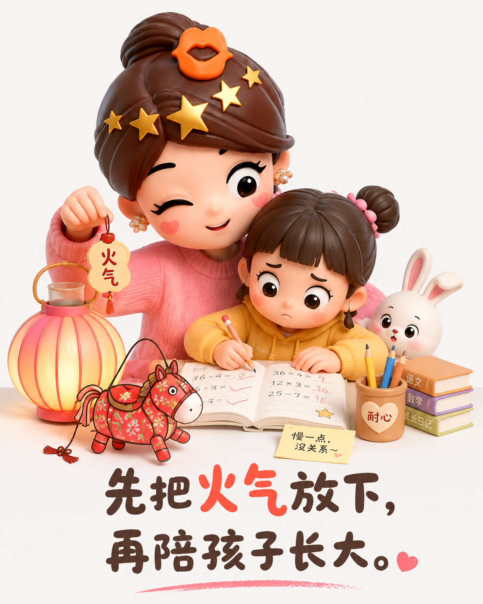
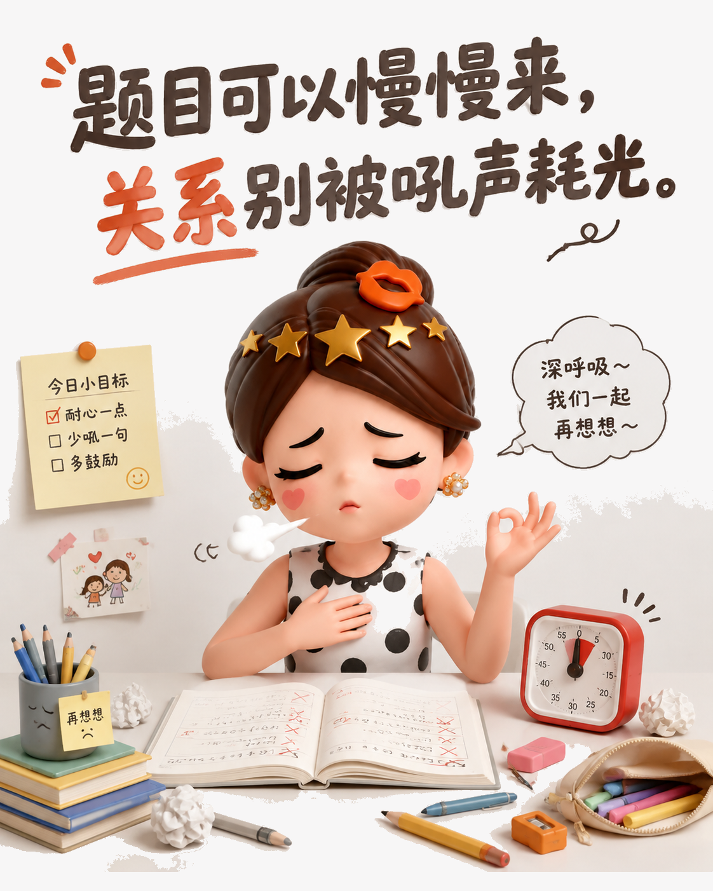
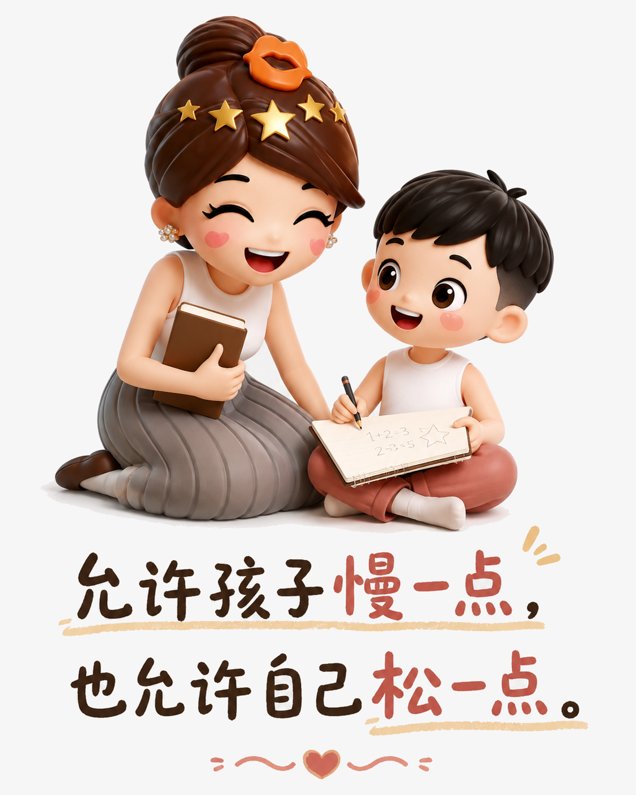

别让一道题，替你决定亲子关系
辅导作业最先需要被照顾的，常常不是答案，而是家长和孩子之间的情绪。
一张作业纸，为什么能点燃全家
孩子把题做错，家长讲到口干，双方却都没有更接近答案。大人越急，孩子越慌；孩子越慌，越容易把数字和字母写反。最后需要纠正的，已经不只是题目，还有彼此的脸色。

先处理情绪，再处理知识
作业进度慢，并不等于孩子不努力。把计时器、奖励和训斥轮番摆上桌，往往只会让学习变成一场对抗。家长可以先停几秒，喝口水，承认自己正在着急；这不是放任，而是把批评从孩子身上移回问题本身。

把答案还给孩子
可以把要求降到很小：先写一道，错了再看；不急着替他改，让他自己发现并重来。学习是孩子的任务，稳定情绪是家长的任务。允许速度不同，也允许一张作业纸不够漂亮，亲子关系却要留在安全的位置。

孩子终究会长大，今天的一道题也不会定义他的人生。辅导作业可以认真，但不必把每一次错误都升级成家庭战争。